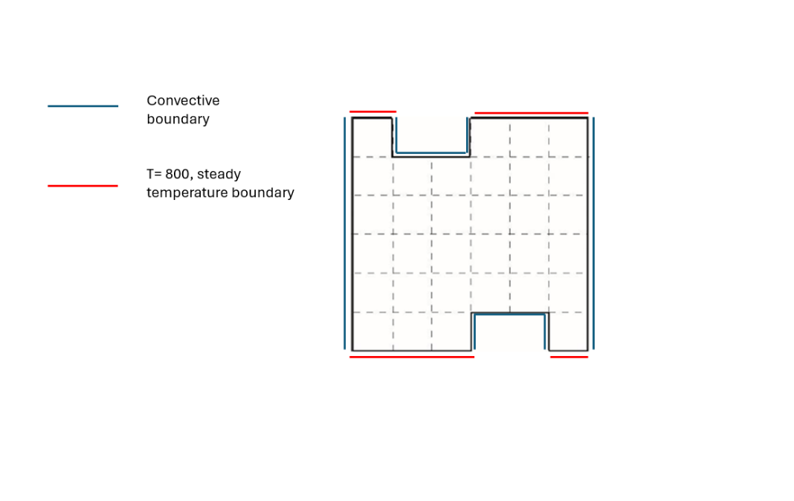
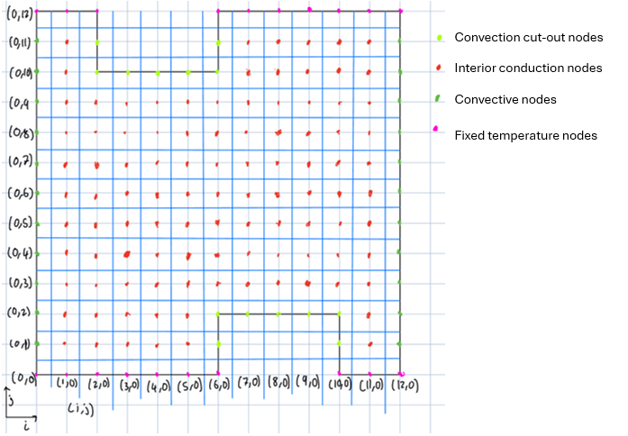

The problem
The task was to find the steady-state temperature field in a 6 cm × 6 cm cross-section of a long bar with two diagonally-mirrored cut-outs, treated as a 2-D conduction problem. The boundary conditions combined several physics: fixed 800 °C top and bottom edges, convective cut-out edges (h = 500 W/m²·°C, ambient 20 °C), thermal conductivity k = 40 W/m·°C, and a volumetric heat generation of 850 kW/m³.

Approach
1 · Deriving the node equations
From a control-volume energy balance I derived discretised temperature equations for three distinct node types, each handled separately so the boundary conditions were captured exactly:
- Interior conduction nodes — Fourier conduction across all four faces.
- Convective boundary nodes — a convective term replacing conduction on the exposed face.
- Convective cut-out nodes — the more complex corner geometry of the cut-outs.
Nodes were deliberately placed directly on every boundary so the conditions were applied precisely rather than interpolated.

2 · Iterative solution
I implemented the solver in Excel using the Jacobi method, updating all node temperatures simultaneously from the previous sweep. Jacobi was chosen for stability and transparency, accepting its slower convergence versus Gauss–Seidel given Excel's processing limits.
3 · Verification by energy balance
To check the solution rather than just trust it, I performed a whole-domain energy balance at steady state — summing conduction at fixed-temperature edges, convection at convective edges, and the volumetric generation. A net imbalance close to zero indicates convergence, and a shrinking imbalance under refinement indicates increasing accuracy.
Results — grid-refinement convergence
I ran the solver at three resolutions with an approximately √2 refinement ratio between levels, consistent with classical Richardson refinement for finite-difference schemes.
| Grid | Residual (W) | Energy imbalance |
|---|---|---|
| 7 × 7 | 403.75 | 0.87% |
| 13 × 13 | 170 | 0.32% |
| 25 × 25 | −33.37 | −0.06% |
The coarse 7 × 7 grid gave a reasonable first estimate but struggled with the steep gradients around the cut-outs. Each refinement made the solution more energy-consistent, confirming a converged result.
Skills demonstrated
- Deriving finite-difference equations from first-principles energy balances for mixed boundary types.
- Implementing and stabilising an iterative linear solver.
- Verification and convergence practice — treating a numerical answer as something to be proven, not assumed.